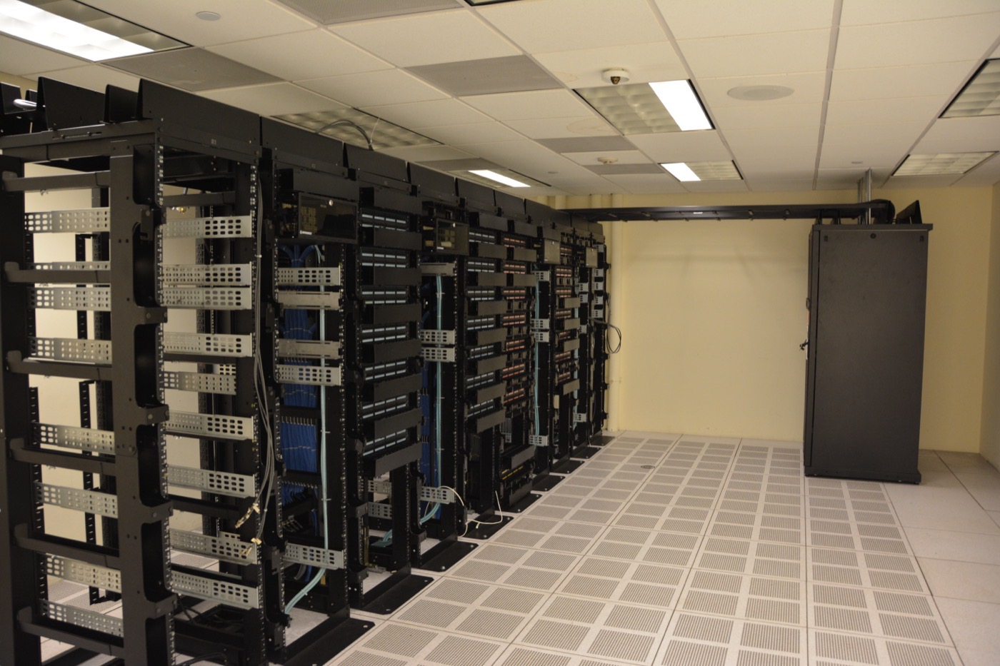

Executive Summary
AI 저작권은 오랫동안 "무엇으로 학습했는가"의 문제로 여겨졌습니다. 그런데 오늘날 대부분의 AI 서비스는 학습된 지식만으로 답하지 않습니다. 질문을 받을 때마다 외부 문서를 실시간으로 검색해 그 내용을 답변에 끼워 넣습니다. 이 검색 증강 생성(RAG)의 실시간 검색 계층, 곧 그라운딩 데이터에서 저작권 책임의 무게중심이 새로 자라고 있습니다. 이 글은 학습 데이터와 그라운딩 데이터의 법적 위험이 왜 구조적으로 다른지를 봅니다.
차이는 발생 시점에 있습니다. 학습 데이터의 저작권 위험은 개발할 때 한 번 발생하고 모델 가중치 안에서 굳습니다. 그라운딩 데이터는 질의가 들어올 때마다 원본을 다시 불러오기 때문에, 검색된 문장이 답변에 재현되는 순간 저작권 위험이 매 응답에서 새로 생깁니다. 여기에 하나가 더 겹칩니다. 학습이 끝난 모델은 원본 접근이 끊겨도 계속 작동하지만, 그라운딩 시스템은 접근이 끊기는 순간 답을 만들지 못합니다.
학습 데이터 소송은 Thomson Reuters와 Anthropic 판례로 윤곽이 잡혀가는 반면, 그라운딩 데이터의 저작권 책임은 아직 별도의 법리가 거의 없습니다. 이 글은 그 격차를 짚고, AI-레디 데이터 거버넌스가 이제 무엇을 추적해야 하는지를 묻습니다.
주요 수치
출처: Sidley Austin, AIVortex
세 숫자가 이 글의 비대칭을 압축합니다. 학습 데이터 쪽에는 이미 수십억 달러 단위의 합의금과 첫 확정 판결이 나왔지만, 그라운딩 데이터를 정면으로 다룬 확립 판례는 사실상 없습니다. 그 사이에서 그라운딩 데이터의 저작권 위험은 배포가 끝난 뒤에도 질의 단위로 계속 재생성됩니다.
$15억
학습 데이터 합의금
Bartz v. Anthropic 합의. 학습 데이터 축은 이미 가격표가 붙었다
0건
그라운딩 전용 확립 판례
그라운딩 데이터의 저작권 책임을 정면으로 확정한 판결은 아직 없다
매 질의
위험 재생성 주기
학습은 개발 때 한 번, 그라운딩은 응답할 때마다 새로 위험이 발생한다
학습 데이터는 판례가 쌓이는데, 검색 데이터는 이름도 없다
학습 데이터의 저작권 책임은 지난 2년 사이 법정에서 빠르게 윤곽을 얻었습니다. Thomson Reuters v. ROSS Intelligence는 2025년 2월, AI 학습을 둘러싼 저작권 분쟁에서 나온 첫 확정 판결로 기록됐습니다. 법원은 결과물에 원문이 그대로 재현되지 않았더라도 침해가 성립할 수 있다고 보며 공정이용 항변을 물리쳤고, "AI 출력이 원작의 시장과 경쟁하는가"를 핵심 잣대로 세웠습니다. 뒤이어 Bartz v. Anthropic은 적법하게 산 책과 해적판을 갈라 보며 약 15억 달러 합의로 이어졌고, NYT v. OpenAI, Getty Images v. Stability AI 같은 사건이 줄줄이 계류 중입니다.
문제는 오늘의 AI가 이 판례들이 상정한 그림대로 작동하지 않는다는 점입니다. 챗봇에게 무언가를 물으면, 모델은 학습해 둔 지식만 꺼내는 것이 아니라 그 순간 외부 문서와 웹을 검색해 답을 만듭니다. 이것이 검색 증강 생성, 곧 그라운딩입니다. 로펌 Sidley Austin은 이 실시간 검색 계층이 학습 데이터와는 전혀 다른 법적 위험을 안고 있다고 짚습니다. 그런데 이 위험을 정면으로 다룬 판례는 아직 없습니다. 학습 데이터에는 판례와 배상액이 쌓이는 동안, 매일 수백만 건의 질의를 처리하는 검색 계층에는 아직 이름표조차 붙지 않았습니다.
핵심: 학습 데이터 저작권은 판례가 쌓이는 성숙기에 들어섰지만, 실시간 검색으로 답을 만드는 그라운딩 데이터의 책임은 아직 별도의 법리가 비어 있는 공백지대입니다.
학습은 한 번, 그라운딩은 매번
Sidley Austin은 두 데이터를 시험을 앞둔 학생에 빗댑니다. 학습 데이터는 학생이 공부한 교과서입니다. 시험장에 들고 들어가지는 않지만, 공부한 내용이 이미 머릿속에 들어와 사고방식을 형성합니다. 그라운딩 데이터는 시험장에서 그때그때 펼쳐 보는 사실관계 자료입니다. 문제를 풀 때마다 손을 뻗어 참고하고, 자료가 없으면 그 문제는 풀지 못합니다.

이 비유가 저작권 위험의 발생 시점을 가릅니다. 학습 데이터는 훈련이 끝나면 모델 가중치 안에 통계적으로 녹아듭니다. 그 뒤로는 원본에 다시 접근할 필요가 없고, 저작권 위험도 개발 시점에 한 번 발생한 채로 굳습니다. 그라운딩 데이터는 정반대로 움직입니다. 질의가 하나 들어올 때마다 원본 문서를 실시간으로 다시 불러와 프롬프트에 끼워 넣습니다. 저작물을 이용하는 행위가 "개발할 때 한 번"이 아니라 "응답할 때마다" 반복되는 것입니다.
왜 중요한가: 위험이 한 번 발생하고 멈추는 것과, 배포된 뒤에도 질의마다 새로 발생하는 것은 관리 방식이 완전히 다릅니다. 학습 데이터는 한 번 정리하면 끝나지만, 그라운딩 데이터는 시스템이 살아 있는 내내 위험이 함께 살아 있습니다.
검색한 문장이 그대로 나오면, 그 순간 새 책임이 생긴다
그라운딩 데이터의 위험은 네 갈래로 갈라집니다. Sidley Austin이 꼽은 목록인데, 하나같이 학습 데이터의 공정이용 논쟁과는 다른 잣대를 요구하는 지점들입니다.
- 이용약관 위반: 외부 사이트를 실시간으로 쿼리하는 행위 자체가 해당 사이트의 이용약관을 어기는 경우가 있습니다.
- 접근 제한 우회: 페이월이나 로그인 뒤에 있는 콘텐츠를 검색해 오면, 접근 통제를 우회한 것으로 볼 수 있습니다.
- 출력 재현: 검색해 온 문장이 답변에 거의 그대로 나오면, 그 재현 하나하나가 저작권 침해 위험이 됩니다.
- 이용 계약상 제한: 데이터베이스 라이선스가 AI 생성물과의 결합을 명시적으로 배제하는 경우, 그라운딩 사용 자체가 계약 위반입니다.
학습 데이터의 방어 논리는 "저작물 전체를 통계적으로 흡수해 전혀 다른 목적으로 변형했다"는 공정이용의 변형성 주장에 기댑니다. 그라운딩은 이 논리를 그대로 빌려 쓰기 어렵습니다. 특정 문서를 통째로 불러와 그 문장을 답변에 재현하는 구조라서, "변형했다"고 부르기가 훨씬 힘들기 때문입니다. 게다가 이 재현은 개발 시점의 한 번이 아니라 질의가 들어올 때마다 벌어집니다. 하루에 수백만 건을 처리하는 서비스라면, 저작권 위험도 그만큼의 횟수로 새로 쌓입니다.
법원이 공정이용을 최종적으로 가를 때 가장 무겁게 보는 잣대는 "AI 출력이 원작의 시장과 경쟁하는가"입니다. Thomson Reuters 판결도, 계류 중인 NYT v. OpenAI도 이 시장 경쟁 기준을 핵심 쟁점으로 세웠습니다. 그라운딩은 바로 이 지점에서 취약합니다. 검색해 온 문장을 답변에 그대로 얹으면, 그 답변이 원문을 찾아 읽을 이유를 없애는 대체 소비가 되기 쉽기 때문입니다. 원본의 시장을 직접 갉아먹는 출력일수록 시장 경쟁의 증거로 읽히고, 그 출력은 배포된 시스템에서 질의마다 새로 만들어집니다.
한 줄 요약: 학습 데이터는 공정이용의 변형성으로 방어하지만, 검색된 원문을 답변에 그대로 재현하는 그라운딩에는 그 방어가 잘 통하지 않습니다. 그리고 그 위험은 응답 한 건마다 새로 발생합니다.
접근권을 잃으면, 배포된 시스템이 멈춘다
그라운딩 데이터에는 저작권과는 다른 성격의 위험이 하나 더 겹칩니다. 운영 의존성입니다. Sidley Austin은 그라운딩 데이터가 "지속적으로 접근 가능해야 하며, 접근을 잃으면 모델의 출력이 직접 손상될 수 있다"고 못 박습니다. 학습이 끝난 모델은 원본 데이터에 접근하지 못해도 이미 배운 것으로 계속 답을 냅니다. 그라운딩 시스템은 다릅니다. 검색해 올 원본이 사라지면, 그 즉시 답을 만들 재료를 잃습니다.

접근권은 여러 방식으로 끊깁니다. 라이선스 계약이 해지되거나, 대상 사이트가 robots.txt로 크롤링을 막거나, 소송으로 특정 소스 이용이 금지되면, 어제까지 정상이던 서비스가 오늘 답을 못 만듭니다. 학습 데이터에서는 저작권 리스크와 서비스 가용성이 별개의 문제였지만, 그라운딩 데이터에서는 둘이 같은 계층에 겹칩니다. 저작권 분쟁이 곧바로 서비스 중단으로 번지는 구조입니다.
달라진 것: 학습 데이터는 접근이 끊겨도 모델이 돌아가지만, 그라운딩 데이터는 접근 상실이 곧 출력 손상입니다. IP 위험과 가용성 위험이 하나로 묶이면서, 저작권 리스크가 운영 연속성 리스크로 직결됩니다.
거버넌스 표면이 검색 계층으로 옮겨간다
이 블로그는 앞서 "에이전트는 출처의 권한을 물려받지 못한다"에서 RAG 파이프라인의 접근 권한 상속 문제를 다뤘습니다. 그 글의 축은 "누가 무엇을 볼 자격이 있는가", 곧 접근 통제였습니다. 이번 글의 축은 다릅니다. 허가를 받고 정당하게 불러온 콘텐츠라 하더라도, 그 문장을 재현하는 IP 책임과 그 소스에 대한 가용성 의존이 매 질의마다 새로 발생한다는 것입니다. 권한 상속이 "허가받지 못한 사람이 본다"는 문제였다면, 이번은 "허가받아 본 콘텐츠라도 매번 새 책임이 붙는다"는 문제입니다.
AI-레디 데이터를 다루는 실무자에게 이 구분은 점검 목록을 하나 바꿔 놓습니다. 지금까지 저작권 실사는 대체로 학습 세트를 향했습니다. 어떤 데이터로 학습했고, 그 권리를 어떻게 증명하느냐가 질문이었습니다. 그런데 배포된 시스템의 실시간 검색 계층은 이 실사의 시야 밖에 있는 경우가 많습니다. 그라운딩 소스의 이용약관, 라이선스, 그리고 접근 가용성을 학습 데이터만큼 추적하고 있는지 되물어야 할 때입니다.
거버넌스의 대상이 정적인 학습 세트에서 살아 있는 검색 계층으로 옮겨가고 있습니다. 학습 데이터는 한 번 정리하면 대장에 남는 고정 자산에 가깝지만, 그라운딩 데이터는 질의마다 불려 나오고 접근이 끊기면 사라지는 흐르는 자산입니다. 다음에 저작권과 가용성을 함께 따지게 될 자리는, 이미 굳어 버린 학습 세트가 아니라 지금 이 순간에도 문서를 불러오고 있는 검색 계층일 가능성이 큽니다.
참고문헌
1차 소스
- 1.Sidley Austin LLP. (2026-07). Legal Implications in AI Development and Deployment: Training Data and Grounding Data. sidley.com
- 2.AIVortex. (2026-05, 업데이트 2026-07). AI Copyright & Training Data: The 2026 Legal Landscape. aivortex.io
판례
- 3.Thomson Reuters Enterprise Centre GmbH v. ROSS Intelligence Inc., D. Del. (2025-02). AI 학습 데이터 저작권 소송 첫 최종 판결.
- 4.Kadrey v. Meta Platforms, Inc., N.D. Cal. (2025-06).
- 5.Bartz v. Anthropic PBC, N.D. Cal. (2025-06). 약 15억 달러 합의.
- 6.The New York Times Company v. OpenAI, Inc., S.D.N.Y. (계류 중).
- 7.Getty Images (US), Inc. v. Stability AI, Inc., D. Del. (계류 중).
- 8.Concord Music Group, Inc. v. Anthropic PBC, M.D. Tenn. (2026-04, 계류 중).
- 9.Disney Enterprises, Inc. v. Midjourney, Inc., C.D. Cal. (계류 중).